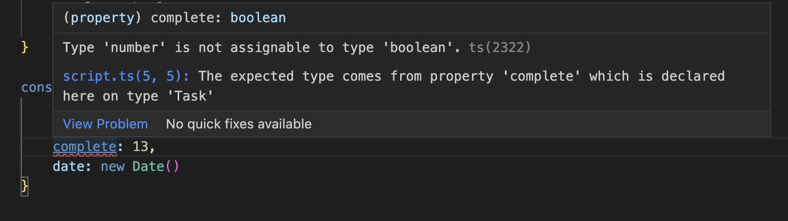

TypeScript Tutorial
Welcome to TypeScript Tutorial
This is a brief overview of some of the main points of TypeScript for the newbie. It is meant to convey a few key points and provide a starter for further investigation of TypeScript (TS).
OUTLINE-------
Topics to cover -**-!-**-update as main points/differences btw JS/TS beome more clear:
- (OVERVIEW/INTRO to tutorial, succintly summarizing major points--WHAT IS TypeScript?)
- Since programming in JavaScript can be a little fast and loose, sometimes the programmer and the program could benenfit from a little more order imposed "from above." TypeScript is JS but more: it's a customizable layer "above" the JavaScript code, and can give type warnings and errors to ensure type-safety. TS can be used in real-time by many IDEs--as you write your JS code.
- TypeScript tooling provides customizability/options for use
- supported by numerous editors/development platforms
- options in levels of type strictness,
- options to display which errors and warnings; MENTION:
- UNKNOWN---when written in TS, requires user to specify type
- and NEVER---forbids specified type from being used by user
- tsc--the TS compiler to type-check your JS code
- with npm you can install the TS compiler from the command line:
npm install -g typescript
- with npm you can install the TS compiler from the command line:
-
Strictness----different users want different things from TS
- flags are customizable (in json file??)
- default settings are least strict
- noImplicitAny & strictNullChecks flags
TS allows you to declare types to ensure type enforcement:

Example:
Creating an instance of a Task:
Creating an instance of a Task:

Entering a value of the wrong type prompts a TS warning (same Task instance as above):

If you want to suppress a warning, simply use @ts-ignore :

In a similar manner, you can set specific portions of your TS to
@ts-check, @ts-nocheck, or @ts-expect-error